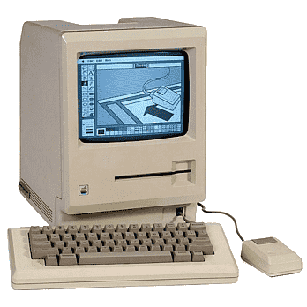

Machintosh
The first Macintosh was a personal computer introduced by Apple Inc. on January 24, 1984. It was designed to be user-friendly and affordable, with a graphical user interface and a mouse for navigation. The Macintosh had a 9-inch black-and-white screen, 128 kilobytes of RAM, and a 3.5-inch floppy disk drive. It was powered by a Motorola 68000 processor and ran Apple's proprietary operating system, known as the Macintosh System Software. The first Macintosh was a revolutionary product that paved the way for the modern personal computer industry, and it remains an iconic symbol of Apple's innovative spirit.
| Macintosh Specifications | |
|---|---|
| Processor | Motorola 68000 |
| RAM | 128 kilobytes |
| Storage | 3.5-inch floppy disk drive |
| Screen Size | 9-inch black-and-white display |
| Operating System | Macintosh System Software |
| Original Price | $2,495 |